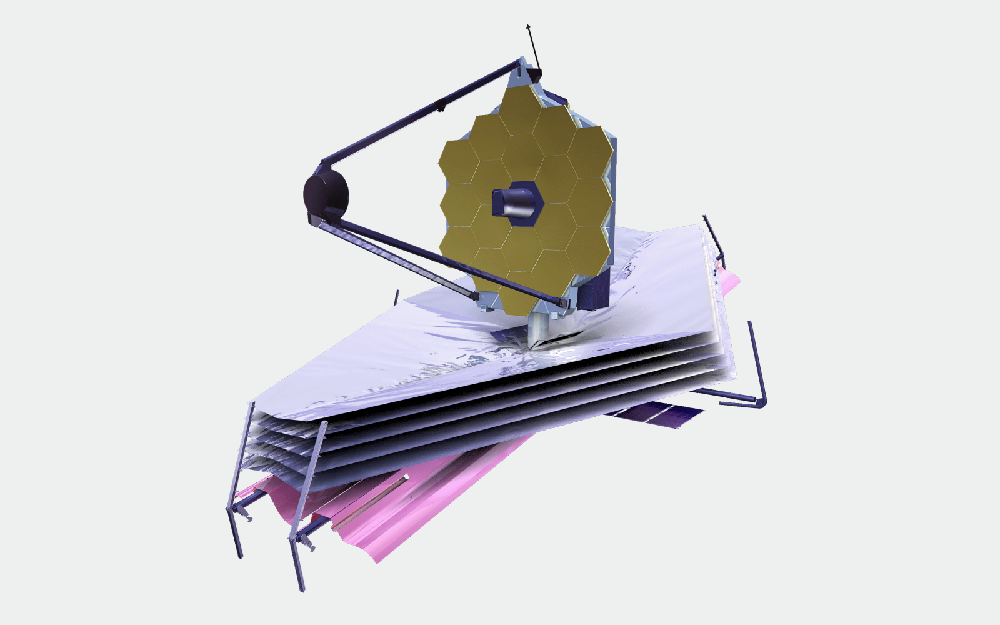
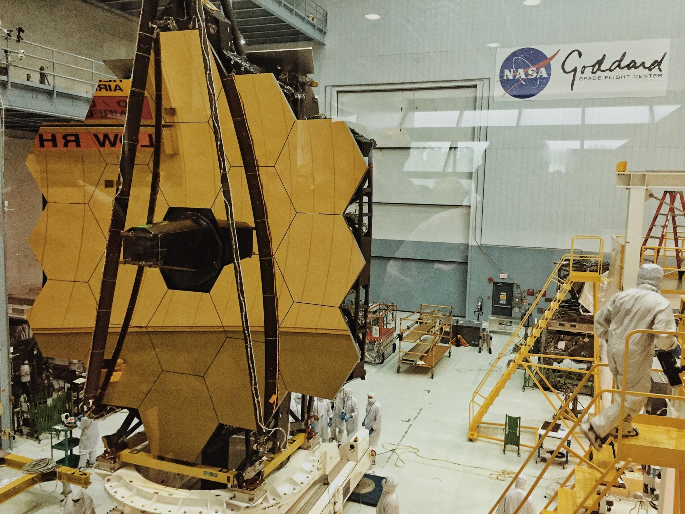

Почему у телескопа такая конструкция
«Джеймс Уэбб» похож на все современные телескопы. Главная часть телескопа — это зеркало, которое собирает свет и направляет его в фокус, где стоит приемник, который регистрирует полученные данные. Телескоп с трубой — это что-то из времен Галилея. Труба нужна, чтобы ничто извне не мешало сбору света. А если телескоп, допустим, находится в темной башне или тем более в космосе, со стороны ему мало что мешает, поэтому можно обойтись и без трубы. Золотая сота или блюдце, которое можно увидеть на всех фотографиях, — это как раз зеркало телескопа. Поскольку оно очень большое, его собрали из нескольких более мелких кусочков. Зеркало сделано из позолоченного бериллия — эти материалы выбраны, чтобы оно хорошо отражало свет и собирало его в одну точку.
Зачем нужен «Джеймс Уэбб», если уже есть «Хаббл»
«Хаббл» — заслуженный телескоп, он в космосе уже 30 с лишним лет. Это большой возраст, из-за этого, во-первых, что-то уже начало ломаться, во-вторых, он идейно устарел. Кроме того, зеркало «Джеймса Уэбба» в несколько раз больше, чем зеркало «Хаббла», — 6,5 метров против 2 метров. Чем больше зеркало, тем больше света оно собирает, тем более мелкие объекты мы можем наблюдать. Поэтому запуск телескопа «Джеймс Уэбб» действительно дает нам надежду на новые астрономические открытия.
«Джеймс Уэбб» и точка Лагранжа
«Хаббл» находится на околоземной орбите, «Джеймс Уэбб» отправится гораздо дальше — в точку Лагранжа, которая находится в 1,5 млн километров от Земли.Точка Лагранжа сейчас очень популярное место, в ней уже летают отечественный телескоп «Спектр-РГ», запущенный три года назад, и европейский телескоп GAIA, который с высокой точностью измеряет положение звезд и расстояние до них. Точка Лагранжа — это место, где уравновешивается гравитация от Земли и Солнца, благодаря этому телескоп может не летать вокруг Земли, не летать вокруг Солнца, а оставаться в устойчивом положении.
Поэтому с ним очень удобно связываться, а также разрабатывать стратегию наблюдений.
Какие открытия может сделать «Джеймс Уэбб»
Основная задача, ради выполнения которой разрабатывался этот телескоп, — наблюдение очень далеких галактик. Сейчас с помощью различных ухищрений мы видим галактики до красного смещения 10. Это очень большой сдвиг и очень далекие расстояния. Мы выяснили, что на красном смещении 10 галактики уже существуют, но ученым хочется увидеть эпоху, когда галактики только начали образовываться, а для этого нужно посмотреть еще дальше, заглянуть за красное смещение 20, 30, 40. Главная цель, для которой разрабатывался телескоп «Джеймс Уэбб», — заглянуть в самые далекие, самые ранние эпохи Вселенной, когда галактики только начинали образовываться.
Поможет ли «Джеймс Уэбб» найти пригодную для жизни планету
В космосе мы можем наблюдать объекты в более высоком разрешении, которые на Земле размывает дрожание атмосферы. Наблюдение из космоса позволяет видеть самые компактные объекты во всех деталях, например экзопланеты. Это холодные объекты, они сами не производят излучение, только отражают его. Поэтому их также изучают в инфракрасной области спектра, и «Джеймс Уэбб» хорошо для этого подходит.
Сейчас ученые ищут планеты у других звезд, составляют статистику: какого они размера, какая у них температура. Но это начальный этап исследования возможности зарождения жизни на других планетах, мы пока не разделяем небесные тела по этому признаку. Какие условия должны быть на планете, чтобы на ней можно было надеяться найти цивилизацию, — это сложный вопрос.
Будет ли у российских ученых доступ к данным с «Джеймса Уэбба»
«Джеймс Уэбб» — дорогостоящий проект, который был запущен NASA вместе с Европейским и Канадским космическими агентствами. Но у нас в астрономии все очень хорошо устроено: ученые давно поняли, что-то количество данных, которые получают современные телескопы, не в состоянии обработать не только один человек, но даже одна страна. Поэтому после того, как запустили «Хаббл», были созданы общие архивы данных в интернете, доступ к которым открыт для всех ученых.
Если вы заявили проект — подали заявку, что вам надо что-то изучить с помощью телескопа, и вам это пронаблюдали, — то объявляется период собственничества, в течение года-двух эти данные принадлежат только вам. Если вы не успели сделать гениальное открытие за это время, эти данные становятся доступны всем, любой астроном может изучить их и написать статью. У «Джеймса Уэбба», как и у других крупных телескопов — и наземных, и находящихся в космосе, — будет свой архив данных. И через пару-тройку лет любой астроном, в том числе российский, сможет поработать с ними.